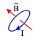
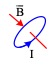

I. TRẮC NGHIỆM
1. Từ trường
Nhận biết:
Câu 1. Vật nào sau đây không tạo ra từ trường?
A. Điện tích chuyển động. B. Điện tích đứng yên.
C. Nam châm. D. Dòng điện.
Câu 2. Tính chất cơ bản của từ trường là:
A. gây ra lực từ tác dụng lên nam châm hoặc lên dòng điện đặt trong nó.
B. gây ra lực hấp dẫn lên các vật đặt trong nó.
C. gây ra lực đàn hồi tác dụng lên các dòng điện và nam châm đặt trong nó.
D. gây ra sự biến đổi về tính chất điện của môi trường xung quanh.
Câu 3. Quy ước nào sau đây là sai khi nói về các đường sức từ?
A. Các đường sức từ có thể cắt nhau.
B. Các đường sức từ có chiều đi ra cực Bắc, đi vào cực Nam.
C. Nơi có từ trường mạnh đường sức từ vẽ dày.
D. Đường sức từ là những đường cong kín hoặc vô hạn ở hai đầu.
Câu 4. Kim nam châm của la bàn đặt trên mặt đất chỉ hướng Bắc – Nam địa lí vì
A. lực hấp dẫn của Trái đất tác dụng lên kim nam châm định hướng cho nó.
B. lực điện của Trái đất tác dụng lên kim nam châm định hướng cho nó.
C. từ trường của Trái đất tác dụng lên kim nam châm định hướng cho nó.
D. lực hướng tâm do Trái đất quay quanh Mặt trời.
Câu 5. Phát biểu nào sau đây là không đúng khi nói về từ trường đều?
A. các đường sức song song và cách đều nhau. B. cảm ứng từ tại mọi điểm đều bằng nhau.
C. lực từ tác dụng lên các dòng điện như nhau. D. Trong lòng ống dây có dòng điện có từ trường đều.
Câu 6. Nếu các đường sức của từ trường đều là những đường thẳng song song cách đều nhau và cùng chiều thì từ trường đó là từ trường
A. do nam châm thẳng tạo ra. B. do dây dẫn thẳng có dòng điện tạo ra.
C. do nam châm hình chữ U tạo ra xung quang nó. D. đều
Câu 7. Các đường sức từ là các đường cong vẽ trong không gian có từ trường sao cho
A. pháp tuyến tại mọi điểm trùng với hướng của từ trường tại điểm đó.
B. tiếp tuyến tại mọi điểm trùng với hướng của từ trường tại điểm đó.
C. pháp tuyến tại mỗi điểm tạo với hướng của từ trường một góc không đổi.
D. tiếp tuyến tại mọi điểm tạo với hướng của từ trường một góc không đổi.
Câu 8. Đường sức từ có dạng là đường thẳng, song song, cùng chiều cách đều nhau xuất hiện
A. Xung quanh dòng điện thẳng. B. Xung quanh một thanh nam châm thẳng
C. Trong lòng của một nam châm chữ U D. Xung quanh một dòng điện tròn.
Câu 9. Từ trường không tương tác với
A. các điện tích chuyển động. B. các điện tích đứng yên.
C. nam châm đứng yên. D. nam châm chuyển động.
Câu 10. Để xác định một điểm trong không gian có từ trường hay không, ta đặt tại đó một
A. điện tích. B. kim nam châm C. sợi dây dẫn. D. sợi dây tơ.
Câu 11. Có hai thanh kim loại bề ngoài giống hệt nhau, có thể là thanh nam châm hoặc thanh thép. Khi đưa một đầu thanh 1 đến gần trung điểm của thanh 2 thì chúng hút nhau mạnh. Còn khi đưa một đầu thanh 2 đến gần trung điểm của thanh 1 thì chúng hút nhau yếu. Chọn kết luận đúng.
A. Thanh 1 là nam châm và thanh 2 là thép. B. Thanh 2 là nam châm và thanh 1 là thép.
C. Thanh1 và thanh 2 đều là thép. D. Thanh1 và thanh 2 đều là nam châm.
2. Lực từ. Cảm ứng từ. Từ trường của dòng điện chạy trong các dây dẫn có hình dạng đặc biệt.
Nhận biết:
Câu 12. Véc tơ cảm ứng từ tại một điểm của từ trường luôn
A. vuông góc với đường sức từ B. nằm theo hướng của đường sức từ
C. nằm theo hướng của lực từ C. không có hướng xác định
Câu 13. Đơn vị đo của cảm ứng từ là
A. Vôn (V) B. Tesla (T) C. (Vê be) Wb D. Niu tơn (N)
Câu 14. Các đường sức từ của dòng điện thẳng dài có dạng là các đường:
A. thẳng vuông góc với dòng điện B. tròn đồng tâm vuông góc với dòng điện
C. tròn đồng tâm vuông góc với dòng điện, tâm trên dòng điện. D. tròn vuông góc với dòng điện.
Câu 15. Các đường sức từ trường bên trong ống dây mang dòng điện có dạng, phân bố, đặc điểm như thế nào?
A. là các đường tròn và là từ trường đều
B. là các đường thẳng vuông góc với trục ống cách đều nhau, là từ trường đều
C. là các đường thẳng song song với trục ống cách đều nhau, là từ trường đều
D. các đường xoắn ốc, là từ trường đều
Câu 16. Biểu thức lực từ tác dụng lên đoạn dây dẫn mang dòng điện dài l là
A. F= BIl./sin α. B. F= BIl.sinα. C. F= BIl.cosα D. F= Bil/cosα
Câu 17. Phát biểu nào dưới đây là sai? Lực từ tác dụng lên phần tử dòng điện
A. vuông góc với phần tử dòng điện B. Cùng hướng với từ trường
C. tỉ lệ với cường độ dòng điện D. tỉ lệ với cảm ứng từ
Câu 18. Lực từ tác dụng lên đoạn dây dẫn không phụ thuộc trực tiếp vào
A. độ lớn cảm ứng từ. B. cường độ dòng điện chạy trong dây dẫn.
C. chiêu dài dây dẫn mang dòng điện. C. điện trở dây dẫn.
Câu 19. Phương của lực từ tác dụng lên dây dẫn mang dòng điện không có đặc điểm nào sau đây?
A. Vuông góc với dây dẫn mang dòng điện. B. Vuông góc với véc tơ cảm ứng từ.
C. Vuông góc với mặt phẳng chứa véc tờ cảm ứng từ và dòng điện.
D. Song song với các đường sức từ.
Câu 20. Biểu thức nào sau đây xác định cảm ứng từ của dòng điện thẳng dài đặt trong không khí
A. B = 2.10-7. B. B= 2.10-7 I.r C. B = 2.107. D. B= 2.107 I.r2
Câu 21.Một dây dẫn được quấn thành ống có chiều dài ống dây là l, bán kính ống dây là R, số vòng dây trên ống là N. Công thức tính độ lớn cảm ứng từ bên trong ống dây có dòng điện I chạy qua là
A. B. C. D.
Câu 22. Chọn câu trả lời đúng nhất? Độ lớn cảm ứng từ sinh bởi dòng điện chạy trong ống dây dài phụ thuộc
A. chiều dài ống dây. B. số vòng dây của ống.
C. đường kính ống. D. số vòng dây trên một mét chiều dài ống.
Câu 23. Cảm ứng từ gây ra bởi dòng điện tròn có N vòng dây, bán kính R, mang dòng điện I là
A. B. C. D.
Thông hiểu:
Câu 24. Một đoạn dây dẫn có dòng điện I đặt nằm ngang có chiều từ ngoài vào trong mặt phẳng bảng đặt trong từ trường có các đường sức từ thẳng đứng từ trên xuống. Lực từ tác dụng lên đoạn dây dẫn có chiều
A. thẳng đứng hướng từ trên xuống. B. thẳng đứng hướng từ dưới lên.
C. nằm ngang hướng từ trái sang phải. D. nằm ngang hướng từ phải sang trái.
 Câu 25. Một dây dẫn thẳng có dòng điện I đặt trong
vùng không gian có từ trường đều có chiều như hình vẽ. Lực từ
Câu 25. Một dây dẫn thẳng có dòng điện I đặt trong
vùng không gian có từ trường đều có chiều như hình vẽ. Lực từ
A. phương ngang hướng sang trái. B. phương ngang hướng sang phải.
C. phương thẳng đứng hướng lên. D. phương thẳng đứng hướng xuống.
 Câu 26. Một dây dẫn thẳng có dòng điện I đặt trong vùng không gian có từ trường
đều có chiều như hình vẽ. Lực từ có
Câu 26. Một dây dẫn thẳng có dòng điện I đặt trong vùng không gian có từ trường
đều có chiều như hình vẽ. Lực từ có
A. hướng từ phải sang trái. B. hướng từ trái sang phải.
C. hướng từ ngoài vào trong. D. hướng từ trong ra ngoài.
Câu 27
Một dây dẫn thẳng có dòng điện
I đặt trong vùng không gian có từ trường đều như hình vẽ. Lực từ tác dụng lên
dây có
A. phương ngang hướng sang trái. B. phương ngang hướng sang phải.
C. phương thẳng đứng hướng lên. D. phương thẳng đứng hướng xuống.
Câu 28. Một đoạn dây dẫn thẳng MN dài 0,1 m có dòng điện I = 6 A đặt trong từ trường đều có cảm ứng từ B = 0,5 T. Góc hợp bởi dây MN và đường cảm ứng từ là 600. Lực từ tác dụng lên đoạn dây có độ lớn là:
A. 0,25 N. B. 0,2 N. C. 0,32 N. D. 0,3 N.
Câu 29. Một đoạn dây dẫn thẳng MN dài 0,06 m có dòng điện I = 5 A đặt trong từ trường đều có cảm ứng từ B = 0,5T. Góc hợp bởi dây MN và đường cảm ứng từ là 300. Lực từ tác dụng lên đoạn dây có độ lớn là :
A. 7,5.10-2 N. B. 75.10-2 N. C. 7,5.10-3 N. D. 0,75.10-2 N.
Câu 30. Lực từ F= BIl sin α sẽ không tác dụng lên đoạn dây dẫn dài l mang dòng điện I, đặt trong từ trường đều có vectơ cảm ứng từ B hợp với dây góc α nếu:
A. 450 B. 900 C. 300 D. 00
Câu 31. Chiều của lực từ tác dụng lên đoạn dây dẫn mang dòng điện, thường được xác định bằng quy tắc:
A. vặn đinh ốc 1. B. vặn đinh ốc 2. C. bàn tay trái. D. bàn tay phải.
Câu 32. Trong các hình vẽ sau, hình vẽ nào biểu diễn sai hướng của véc tơ cảm ứng từ tại tâm vòng dây của dòng điện trong vòng dây tròn mang dòng điện:
A. B. C. D.
Câu 33.Hình vẽ nào dưới đây xác định đúng hướng của véc tơ cảm ứng từ tại M gây bời dòng điện trong dây dẫn thẳng dài vô hạn:
A.  B. C. D.
B. C. D.
Câu 34. Trong các hình vẽ sau, hình vẽ nào biếu diễn đúng hướng của đường cảm ứng từ của dòng điện trong ống dây gây nên:
|
A. |
|
B. |
|
C. |
|
D. |
A và C |
Câu 35. Trong các hình vẽ sau, hình vẽ nào biểu diễn sai hướng của véc tơ cảm ứng từ tại tâm vòng dây của dòng điện trong vòng dây tròn mang dòng điện:
|
A. |
 |
B. |
|
C. |
 |
D. |
|
Vận dụng thấp
Câu 36. Một dòng điện chạy trong dây dẫn thẳng dài vô hạn có độ lớn 10 A đặt trong chân không sinh ra một từ trường có độ lớn cảm ứng từ tại điểm cách dây dẫn 50 cm là
A. 4.10-6 T. B. 2.10-7/5 T. C. 5.10-7 T. D. 3.10-7 T.
Câu 37. Một điểm cách một dây dẫn dài vô hạn mang dòng điện 20 cm thì có độ lớn cảm ứng từ 1,2 μT. Một điểm cách dây dẫn đó 60 cm thì có độ lớn cảm ứng từ là
A. 0,4 μT. B. 0,2 μT. C. 3,6 μT. D. 4,8 μT.
Câu 38. Cho dòng điện cường độ 0,5A chạy qua một ống dây dài 50cm, có 1000 vòng dây. Cảm ứng từ bên trong ống dây là
A. 1,256.10-3 T B. 1,256.10-5 T C. 12,56.10-3 T D. 12,56.10-5 T
Câu 39. Cho dòng điện cường độ 0,15A chạy qua các vòng dây của một ống dây thì cảm ứng từ bên trong ống dây là 35.10-5T. Biết ống dây dài 50cm. Số vòng dây của ống xấp xỉ giá trị nào sau đây?
A. 420 vòng B. 390 vòng C. 670 vòng D. 928 vòng
Câu 40. Phát biểu nào sau đây là đúng? Một dòng điện đặt trong từ trường vuông góc với đường sức từ, chiều của lực từ tác dụng vào dòng điện sẽ không thay đổi khi
A. đổi chiều dòng điện ngược lại. B. đổi chiều cảm ứng từ ngược lại.
C. đồng thời đổi chiều dòng điện và chiều cảm ứng từ. D. quay dòng điện góc 900 xung quanh đường sức từ
Câu 41. Phát biểu nào sau đây là không đúng?
A. Lực từ tác dụng lên dòng điện đổi chiều khi đổi chiều dòng điện.
B. Lực từ tác dụng lên dòng điện đổi chiều khi đổi chiều đường cảm ứng từ.
C. Lực từ tác dụng lên dòng điện đổi chiều khi tăng cường độ dòng điện.
D. Lực từ tác dụng lên dòng điện không đổi chiều khi đồng thời đổi chiều dòng điện và đường cảm ứng từ.
Câu 42. Một dây dẫn thẳng dài có dòng điện I chạy qua. Hai điểm M và N nằm trong cùng một mặt phẳng chứa dây dẫn, đối xứng với nhau qua dây. Kết luận nào sau đây là không đúng?
A. Vectơ cảm ứng từ tại M và N bằng nhau. B. M và N đều nằm trên một đường sức từ.
C. Cảm ứng từ tại M và N có chiều ngược nhau. D. Cảm ứng từ tại M và N có độ lớn bằng nhau.
3. Lực Lo-ren-xơ.
Nhận biết:
Câu 43. Lực Lorenxơ là
A. lực từ tác dụng lên hạt mang điện chuyển động trong từ trường.
B. lực từ tác dụng lên dòng điện.
C. lực từ tác dụng lên hạt mang điện đặt đứng yên trong từ trường.
D. lực từ do dòng điện này tác dụng lên dòng điện kia.
Câu 44. Chọn phát biểu sai.
A. Lực Lorenxơ vuông góc với mặt phẳng chứa véctơ vận tốc của hạt mang điện và véctơ cảm ứng từ.
B. Lực Lorenxơ có chiều xác định theo quy tắc bàn tay trái: để các đường sức từ hướng vào lòng bàn tay, chiều từ cổ tay đến các ngón tay là chiều chuyển động của hạt mang điện, ngón tay cái choãi ra 900 là chiều của lực Lorenxơ.
C. Lực Lorenxơ là nguyên nhân gây ra lực từ tác dụng lên dòng điện
D. Lực Lorenxơ có độ lớn
Câu 45. Chiều và độ lớn của lực Lorenxơ tác dụng lên điện tích chuyển động không phụ thuộc vào.
A. Độ lớn và dấu của điện tích B. Khối lượng của điện tích
C. Độ lớn của cảm ứng từ D. Hướng của véctơ vận tốc
Câu 46. Độ lớn của lực Lorexơ được tính theo công thức
A. B. C. D.
Câu 47. Góc α trong công thức là góc hợp bởi hai vectơ nào?
A. vectơ v và vecto B B. vectơ v và vecto f C. vectơ B và vecto f D. vectơ q và vecto B
Câu 48. Đại lượng không có mặt trong công thức tính độ lớn lực Lorenxơ là:
A. q B. v C. B D. I
Câu 49. Độ lớn của lực Lorenxơ tác dụng lên một điện tích q chuyển động với vận tốc v trong từ trường đều B là f=0 đúng khi véctơ vận tốc của hạt và véctơ cảm ứng từ B:
A. vuông góc nhau. B. cùng phương, cùng chiều C. hợp thành góc tù. D. hợp thành góc nhọn.
Câu 50. Độ lớn của lực Lorenxơ tác dụng lên một điện tích q chuyển động với vận tốc v trong từ trường đều B là f=q.v.B đúng khi véctơ vận tốc của hạt và véctơ cảm ứng từ B:
A. vuông góc nhau B. Cùng phương cùng chiều C. cùng phương ngược chiều D. Làm thành góc α
Thông hiểu
Câu 51. Trong hình vẽ sau hình nào chỉ đúng hướng của lực Lorenxơ tác dụng lên electron chuyển động trong từ trường đều:
A. B. C. D.
Câu 52. Trong hình vẽ sau hình nào chỉ đúng hướng của lực Lorenxơ tác dụng lên electron và hạt mang điện dương chuyển động trong từ trường đều:
A. B. C. D.
Vận dụng thấp
Câu 53. Một điện tích q = 1,6.10-19 C bay vào không gian có từ trường đều có cảm ứng từ B =
0,2 T với vận tốc ban đầu v0 = 2.105 m/s hợp với  góc 300. Lực
Lorenxơ tác dụng vào điện tích có độ lớn là
góc 300. Lực
Lorenxơ tác dụng vào điện tích có độ lớn là
A. - 3,2.10-15 N B. - 6,4.10-15 N C. 3,2.10-15 N D. 6,4.10-15 N
Câu 54. Một electron có điện
tích q = - 1,6.10-19 C
bay vào không gian có từ trường đều có cảm ứng từ B = 0,2 T với vận tốc ban đầu
v0 = 2.105 m/s vuông góc với  .
Lực Lorenxơ tác dụng vào electron
có độ lớn là
.
Lực Lorenxơ tác dụng vào electron
có độ lớn là
A. - 3,2.10-14 N B. - 6,4.10-15 N C. 3,2.10-15 N D. 6,4.10-15 N
2. Từ thông. Cảm ứng điện từ. Suất điện động cảm ứng.
Nhận biết:
Câu 55. Một diện tích S đặt trong từ trường đều có cảm ứng từ B, góc giữa vectơ cảm ứng từ và vectơ pháp tuyến là . Từ thông qua diện tích S được tính theo công thức
A. = BS.sin B. = BS.cos C. = BS.tan D. = BS.ctan
Câu 56. Đơn vị của từ thông là:
A. Tesla (T). B. Ampe (A). C. Vêbe (Wb). D. Vôn (V).
Câu 57. 1 Vêbe bằng
A. 1 T.m2. B. 1 T/m. C. 1 T.m. D. 1 T/ m2.
Câu 58 Từ thông qua một diện tích S phụ thuộc các yếu tố nào sau đây?
A. góc tạo bởi pháp tuyến và vectơ cảm ứng từ và diện tích đang xét
B. độ lớn cảm ứng từ và góc tạo bởi pháp tuyến và vectơ cảm ứng từ
C. góc tạo bởi pháp tuyến và vectơ cảm ứng từ, độ lớn cảm ứng từ và diện tích đang xét
D. diện tích đang xét.
Câu 59. Chọn câu sai ?
A. Giá trị từ thông qua diện tích S cho biết từ trường nơi đặt diện tích S lớn hay bé.
B. Đơn vị của từ thông là vê be (Wb).
C. Khi đặt diện tích S vuông góc với các đường sức từ, nếu S càng lớn thì từ thông có giá trị càng lớn.
D. Từ thông là đại lượng vô hướng, có thể dương, âm hoặc bằng 0.
Câu 60. Phát biểu nào sau đây là không đúng?
A. Đơn vị của từ thông là Vê be (Wb)
B. Biểu thức tính từ thông qua diện tích S: = BS.cos
C. Góc giữa vectơ cảm ứng từ và vectơ pháp tuyến là
D. Từ thông qua một diện tích S chỉ phụ thuộc vào độ lớn của cảm ứng từ nơi đặt diện tích S.
Câu 61. Độ lớn của suất điện động cảm ứng trong một mạch kín được xác định theo công thức:
A. B. C. D.
Câu 62. Độ lớn của suất điện động cảm ứng trong mạch kín tỉ lệ với
A. tốc độ biến thiên từ thông qua mạch ấy. B. độ lớn từ thông qua mạch.
C. điện trở của mạch. D. diện tích của mạch.
Câu 63 Phát biểu nào sau đây là không đúng?
A. Hiện tượng cảm ứng điện từ trong một mạch điện do chính sự biến đổi của dòng điện trong mạch đó gây ra gọi là hiện tượng tự cảm.
B. Suất điện động được sinh ra do hiện tượng tự cảm gọi là suất điện động tự cảm.
C. Hiện tượng tự cảm là một trường hợp đặc biệt của hiện tượng cảm ứng điện từ.
D. Suất điện động cảm ứng cũng là suất điện động tự cảm.
Câu 64. Phát biểu nào sau đây là không đúng?
A. Khi có sự biến đổi từ thông qua mặt giới hạn bởi một mạch điện, thì trong mạch xuất hiện suất điện động cảm ứng. Hiện tượng đó gọi là hiện tượng cảm ứng điện từ.
B. Dòng điện xuất hiện khi có sự biến thiên từ thông qua mạch điện kín gọi là dòng điện cảm ứng.
C. Dòng điện cảm ứng có chiều sao cho từ trường do nó sinh ra luôn ngược chiều với chiều của từ trường đã sinh ra nó.
D. Dòng điện cảm ứng có chiều sao cho từ trường do nó sinh ra có tác dụng chống lại nguyên nhân đã sinh ra nó.
Câu 65. Trong một mạch kín dòng điện cảm ứng xuất hiện khi
A. mạch điện được đặt trong một từ trường không đều B. mạch điện được đặt trong một từ trường đều
C. trong mạch có nguồn điện D. từ thông qua mạch điện biến thiên theo thời gian
Câu 66. Điều nào sau đây không đúng khi nói về hiện tượng cảm ứng điện từ?
A. Trong hiện tượng cảm ứng điện từ, từ trường biến thiên có thể sinh ra dòng điện.
B. Dòng điện cảm ứng có thể tạo ra từ từ trường của dòng điện hoặc từ trường của nam châm.
C. Dòng điện cảm ứng trong mạch chỉ tồn tại khi có từ thông biến thiên qua mạch;
D. dòng điện cảm ứng xuất hiện trong mạch kín nằm yên trong từ trường không đổi.
Câu 67 Định luật Len-xơ được dùng để
A. Xác định độ lớn của suất điện động cảm ứng trong một mạch điện kín.
B. Xác định chiều dòng điện cảm ứng xuất hiện trong một mạch điện kín.
C. Xác định cường độ của dòng điện cảm ứng xuất hiện trong một mạch điện kín.
D. Xác định sự biến thiên của từ thông qua một mạch điện kín phẳng.
Câu 68. Định luật Len - xơ về chiều của dòng điện cảm ứng là hệ quả của định luật bảo toàn nào?
A. Năng lượng. B. Điện tích. C. Động lượng. D. Khối lượng.
Câu 69. Chọn từ thích hợp điền vào chỗ trống ở câu sau: Dòng điện cảm ứng xuát hiện trong mạch kín có chiều sao cho từ trường cảm ứng có tác dụng ……………. sự biến thiên của từ thông ban đầu qua mạch kín
A. tăng cường B. chống lại C. làm giảm D. triệt tiêu
Câu 70. Phát biểu nào sau đây là không đúng?
A. Dòng điện cảm ứng được sinh ra trong khối vật dẫn khi chuyển động trong từ trường hay đặt trong từ trường biến đổi theo thời gian gọi là dòng điện Fu-cô.
B. Dòng điện xuất hiện khi có sự biến thiên từ thông qua mạch điện kín gọi là dòng điện cảm ứng.
C. Dòng điện Fu-cô được sinh ra khi khối kim loại chuyển động trong từ trường có tác dụng chống lại chuyển động của khối kim loại đó.
D. Dòng điện Fu-cô chỉ được sinh ra khi khối vật dẫn đặt chuyển động trong từ trường luôn có hại.
Câu 71 Dòng điện Fu-cô là
A. dòng điện chạy trong khối kim loại
B. dòng điện cảm ứng sinh ra trong mạch kín khi từ thông qua mạch biến thiên.
C. dòng điện cảm ứng sinh ra trong khối kim loại khi khối kim loại chuyển động trong từ trường
D. dòng điện xuất hiện trong tấm kim loại khi nối tấm kim loại với hai cực của nguồn điện
Câu 72 Chọn một đáp án sai khi nói về dòng điện Fu-cô:
A. Dòng điện Fu cô gây hiệu ứng tỏa nhiệt
B. Dòng điện Fu cô xuất hiện trong động cơ điện chống lại sự quay của động cơ làm giảm công suất của động cơ.
C. Dòng điện Fu cô xuất hiện trong công tơ điện có tác dụng làm cho đĩa ngừng quay nhanh khi ngắt thiết bị điện.
D. Dòng điện Fu cô là dòng điện có hại.
Câu 73 Chọn một đáp án sai khi nói về dòng điện Fu-cô:
A. Hiện tượng xuất hiện dòng điện Fu-cô thực chất là hiện tượng cảm ứng điện từ.
B. Chiều của dòng điện Fu-cô cũng được xác định bằng định luật Jun – Lenxơ.
C. Dòng điện Fu-cô trong lõi sắt của máy biến thế là dòng điện có hại.
D. Dòng điện Fu-cô xuất hiện cản trở chuyển động của khối vật dẫn trong từ trường.
Câu 74 Phát biểu nào là đúng về định luật Fa – ra – đây?
A. Độ lớn của suất điện động cảm ứng trong một mạch tỉ lệ với tốc độ biến thiên của từ trường qua mạch đó
B. Độ lớn của suất điện động cảm ứng trong một mạch kín tỉ lệ nghịch với tốc độ biến thiên của từ thông qua mạch kín đó
C. Độ lớn của suất điện động cảm ứng trong một mạch kín tỉ lệ với tốc độ biến thiên của từ thông qua mạch kín đó
D. Suất điện động cảm ứng trong một mạch kín tỉ lệ với tốc độ biến thiên của từ thông qua mạch kín đó
Thông hiểu:
Câu 75. Muốn cho trong một khung dây kín xuất hiện một suất điện động cảm ứng thì một trong các cách đó là
A. làm thay đổi diện tích của khung dây. B. đưa khung dây kín vào trong từ trường đều.
C. làm cho từ thông qua khung dây biến thiên. D. quay khung dây quanh trục đối xứng của nó.
Câu 76. Một mạch kín (C) phẳng không biến dạng đặt vuông góc với từ trường đều, trong trường hợp nào sau đây thì trong mạch xuất hiện dòng điện cảm ứng?
A. Mạch quay quanh trục nằm trong mặt phẳng (C). B. Mạch chuyển động tịnh tiến.
C. Mạch quay quanh trục vuông góc với mặt phẳng (C).
D. Mạch chuyển động trong mặt phẳng vuông góc với từ trường.
Câu 77. Cho dòng điện thẳng cường độ I không đổi. Khung dây dẫn hình chữ nhật MNPQ đặt sát
dòng điện thẳng, cạnh MQ trùng với dòng điện thẳng như hình vẽ. Hỏi khi nào thì trong khung
dây không có dòng điện cảm ứng:
A. khung quay quanh cạnh MQ B. khung quay quanh cạnh MN
C. khung quay quanh cạnh PQ D. khung quay quanh cạnh NP
Câu 78. Cho dòng điện thẳng cường độ I không đổi. Khung dây dẫn
hình chữ nhật MNPQ đặt gần
dòng điện thẳng, cạnh MQ song song với dòng điện thẳng như hình vẽ. Hỏi khi nào thì trong
khung dây không có dòng điện cảm ứng:
A. khung quay quanh cạnh MQ B. khung quay quanh cạnh MN
C. khung quay quanh cạnh PQ D. khung quay quanh trục là dòng điện thẳng I
Câu 79. Hình vẽ nào sau đây xác định đúng chiều dòng điện cảm ứng khi cho vòng dây dịch chuyển lại gần hoặc ra xa nam châm:
Câu 80. Hình vẽ nào sau đây xác định đúng chiều dòng điện cảm ứng khi cho vòng dây dịch chuyển lại gần hoặc ra xa nam châm:
Câu 81. Hình vẽ nào sau đây xác định đúng chiều dòng điện cảm ứng khi cho nam châm rơi thẳng đứng xuống tâm vòng dây đặt trên bàn:
Câu 82: Hình vẽ nào sau đây xác định đúng chiều dòng điện cảm ứng khi cho cả nam châm và vòng dây cùng rơi tự do thẳng đứng đồng thời cùng lúc:
Câu 83: Một khung dây dẫn hình chữ nhật không bị biến dạng được đặt trong một từ trường đều ở vị trí (1) mặt phẳng khung dây song song với các đường sức từ. Sau đó, cho khung dây quay 90 độ đến vị trí (2) vuông góc với các đường sức từ. Khi quay từ vị trí (1) đến vị trí (2)
A. không có dòng điện cảm ứng xuất hiện trong khung dây.
B. có dòng điện cảm ứng xuất hiện trong khung dây theo chiều ADCB.
C. có dòng điện cảm ứng xuất hiện trong khung dây theo chiều ABCD.
D. có
dòng điện cảm ứng xuất hiện trong khung dây lúc đầu theo chiều ABCD sau đó đổi
chiều ngược lại.
Câu 84: Tương tác giữa hai đoạn dây thẳng MN và PQ ở hình vẽ trên là
A. không tương tác B. hút nhau C. đẩy nhau D. ban đầu hút nhau, khi đến gần thì đẩy nhau
Câu 85:
Hình vẽ nào sau đây xác định đúng chiều dòng điện cảm ứng:
Câu 86. Hình vẽ nào sau đây xác định đúng chiều dòng điện cảm
ứng:
Vận dụng thấp
Câu 87: Một khung dây phẳng diện tích 10.10-4 m2 đặt trong từ trường đều có vectơ cảm ứng từ hợp với vectơ pháp tuyến của mặt phẳng khung dây một góc 60° và có độ lớn 0,12 T. Từ thông qua khung dây này là
A. 2,4.10-4 Wb B. 0,6. 10−4 Wb C. 0,6.10-6 Wb D. 2,4.10-6 Wb
Câu 88: Từ thông qua một khung dây biến đổi, trong khoảng thời gian 0,1 (s) từ thông tăng từ 0,6 (Wb) đến 1,6 (Wb). Suất điện động cảm ứng xuất hiện trong khung có độ lớn bằng
A. 6 V. B. 10 V. C. 16 V. D. 22 V.
Câu 89: Một khung dây phẳng diện tích 20.10-4 m2, đặt trong từ trường đều có vectơ cảm ứng từ hợp với vectơ pháp tuyến của mặt phẳng khung dây một góc 60° và có độ lớn 2.10-4 T, người ta làm cho từ trường giảm đều đến 0 trong thời gian 0,01 s. Tính suất điện động cảm ứng xuất hiện trong khung dây trong thời gian từ trường biến đổi.
A. 2.10-5 V. B. 10-4 V. C. -2.10-5 V. D. 4.10-4 V.
Câu 90: Một hình vuông cạnh 5 cm đặt trong từ trường đều có cảm ứng từ B = 4.10-4 T, từ thông qua hình vuông đó bằng 10-6 Wb. Góc hợp bởi véctơ cảm ứng từ và véctơ pháp tuyến của hình vuông là
A. 600 B. 300 C. 450 D. 00
2. Tự cảm.
Nhận biết:
Câu 91: Biểu thức của từ thông riêng là
A. = L.i B. = L/I C. = l.I D. = i/L
Câu 92: Từ thông riêng của mạch kín phụ thuộc vào
A. chiều dài dây dẫn B. tiết diện dây dẫn
C. Điện trở của mạch D. cường độ dòng điện qua mạch
Câu 93: Hiện tượng tự cảm là hiện tượng cảm ứng điện từ do sự biến thiên từ thông qua mạch gây ra bởi
A. sự biến thiên của chính cường độ dòng điện trong mạch. B. sự chuyển động của nam châm với mạch.
C. sự chuyển động của mạch với nam châm. D. sự biến thiên từ trường Trái Đất.
Câu 94: Phát biểu nào sau đây là không đúng?
A. Hiện tượng cảm ứng điện từ trong một mạch điện do chính sự biến đổi của dòng điện trong mạch đó gây ra gọi là hiện tượng tự cảm.
B. Suất điện động được sinh ra do hiện tượng tự cảm gọi là suất điện động tự cảm.
C. Hiện tượng tự cảm là một trường hợp đặc biệt của hiện tượng cảm ứng điện từ.
D. Suất điện động cảm ứng cũng là suất điện động tự cảm.
Câu 96: Hiện tượng tự cảm là hiện tượng cảm ứng điện từ
A. xảy ra trong một mạch có sự biến thiên từ thông
B. xảy ra trong một mạch có dòng điện mà sự biến thiên từ thông qua mạch được gây ra bởi sự biến thiên của cường độ dòng điện trong mạch
C. xảy ra trong một mạch có dòng điện mà sự biến thiên từ thông qua mạch được tỉ lệ với sự biến thiên từ thông của cường độ dòng điện trong mạch
D. xảy ra trong một mạch có dòng điện mà sự biến thiên từ thông qua mạch được gây ra bởi sự biến thiên từ thông của cường độ dòng điện trong mạch
Câu 97: Biểu thức tính suất điện động tự cảm là
A. B. e = L.I C. e = 4. 10-7.n2.V D.
Câu 98: Suất điện động cảm ứng là suất điện động
A. sinh ra dòng điện cảm ứng trong mạch kín. B. sinh ra dòng điện trong mạch kín.
C. được sinh bởi nguồn điện hóa học. D. được sinh bởi dòng điện cảm ứng.
Câu 99: Suất điện động tự cảm của mạch điện tỉ lệ với
A. từ thông cực tiểu qua mạch B. từ thông cực đại qua mạch
C. Điện trở của mạch D. tốc độ biến thiên cường độ dòng điện qua mạch
Câu 100: Đơn vị của độ tự cảm là
A. Vôn (V). B. Tesla (T). C. Vêbe (Wb). D. Henry (H).
Câu 101: Đơn vị của độ tự cảm là henry, với 1H bằng
A. 1 J.A2 B. 1 J/A2 C. 1V.s.A D. 1 V.s/A
Câu 102: Độ tự cảm của ống dây tỉ lệ nghịch với đại lượng nào?
A. Chiều dài ống dây B. Số vòng dây
C. Diện tích mỗi vòng dây D. Độ từ thẩm môi trường
Câu 103: Điều nào sau đây không đúng khi nói về hệ số tự cảm của ống dây?
A. phụ thuộc vào số vòng dây của ống; B. phụ thuộc tiết diện ống;
C. không phụ thuộc vào môi trường xung quanh; D. có đơn vị là H (henry).
Vận dụng thấp
Câu 104: Một ống dây có hệ số tự cảm L = 0,1 H, trong đó dòng điện biến thiên đều 0,5 A/s. Suất điện động tự cảm xuất hiện trong ống sẽ có giá trị là bao nhiêu?
A. 0,03 V. B. 0,04 V. C. 0,05 V. D. 0,06 V.
Câu 105: Một ống dây có hệ số tự cảm L = 0,1 (H), trong đó dòng điện biến thiên đều 2 A/s. Suất điện động tự cảm xuất hiện trong ống sẽ có giá trị là bao nhiêu?
A. 0,1 V. B. 0,2 V. C. 0,3 V. D. 0,4 V.
Câu 106: Một ống dây có hệ số tự cảm L = 0,2 H, trong đó dòng điện biến thiên đều 2 A/s. Suất điện động tự cảm xuất hiện trong ống sẽ có giá trị là bao nhiêu?
A. 0,1 V. B. 0,4 V. C. 0,5 V. D. 0,6 (V).
Câu 107:Trong một mạch kín có độ tự cảm 0,5.10-3 H, nếu suất điện động tự cảm có độ lớn bằng 0,25 V thì tốc độ biến thiên của dòng điện là
A. 250 A/s. B. 400 A/s. C. 600 A/s. D. 500 A/s.
Câu 108. Một ống dây có hệ số tự cảm L = 0,01 H, có dòng điện I = 5 A chạy ống dây. Từ thông riêng qua ống dây là:
A. 0,01 Wb. B. 0,05 Wb. C. 0,3 Wb. D. 0,4(Wb
Câu 109: Một ống dây có hệ số tự cảm L = 0,1 H, từ thông riêng của ống dây là 0,5 Wb. Cường độ dòng điện chạy ống dây bằng
A. 5 A B. 4 A C. 3 A D. 2 A
Câu 110: Một ống dây dài 50cm có 2500 vòng dây, đường kính của ống bằng 2cm. Một dòng điện có cường độ tăng từ 0 đến 1,5A chạy qua ống dây trong thời gian 0,01s. Tính suất điện động tự cảm trong ống dây:
A. 0,14V B. 0,26V C. 0,52V D. 0,74V
TỰ LUẬN
Vận dụng:
1. Xác định vectơ lực từ (phương, chiều, độ lớn) trong các trường hợp sau, biết:
a. B = 0,02T, α = 450, I = 5A, l = 5cm,
b. B = 0,05T, I = 4A, l=10cm
a. b.
2. Một dòng điện có cường độ I = 5 A chạy trong một dây dẫn thẳng, dài. Cảm ứng từ do dòng điện này gây ra tại điểm M có độ lớn B = 4.10-5 T. Điểm M cách dây một khoảng bao nhiêu?
3. Tìm cảm ứng từ của từ trường ở trong lòng một ống dây hình trụ có chiều dài l = 62,8 cm. Xung quanh quấn 1000 vòng dây dẫn, có dòng điện một chiều I=0,2A chạy qua.
|
4. Một dây dẫn được uốn gấp lại thành khung dây tam giác MNP vuông tại N. Đặt khung dây vào trong từ trường đều. Cho Tính độ lớn lực từ tác dụng lên từng cạnh của khung dây và vẽ hình biểu diễn các vec tơ lực từ trong các trường hợp sau: a. vuông góc mặt phẳng MNP. b. nằm trong mặt phẳng MNP, song song với cạnh NP.
|
|
5. Thanh MN dài l = 20 cm có khối lượng 5 g treo nằm ngang bằng hai sợi
chỉ mảnh CM và DN. Thanh nằm trong từ trường đều có cảm ứng từ B =
0,3 T nằm ngang vuông góc với thanh có chiều như hình vẽ. Mỗi sợi chỉ
treo thanh có thể chịu được lực kéo tối đa là 0,04 N. Dòng điện chạy qua
thanh MN có cường độ nhỏ nhất là bao nhiêu thì một trong hai sợi chỉ treo
thanh bị đứt. Cho gia tốc trọng trường g = 9,8 m/s2.
6. Một dây thẳng MN = 25cm được treo bằng hai dây dẫn nhẹ thẳng đứng. Hệ được đặt trong từ trường đều hướng thẳng đứng từ dưới lên, có B = 0,05T. Cho dòng điện I = 5A qua dây MN
a. Xác định lực từ tác dụng lên dây
b. Xác định xác định góc lệch của hai dây treo so với phương thẳng đứng. Biết khối lượng dây MN là 50g.
7. Hai dây dẫn thẳng song song dài vô hạn đặt cách nhau 10cm trong không khí. Dòng điện chạy trong hai dây có độ lớn I1 =10A; I2 =20A. Tính cảm ứng từ tổng hợp B trong trường hợp 2 dòng điện cùng chiều, ngược chiều nhau tại:
a. Điểm O cách mỗi dây 5cm.
b. Điểm M cách dây I1 là 10cm, cách dây I2 là 20cm.
c. Tìm quỹ tích những điểm tại đó .
8. Hai dây dẫn thẳng dài vô hạn I1 =2A, I2 = 4A đồng phẳng, vuông góc với nhau. Xác định tại những điểm trong mặt phẳng chứa 2 dây, cách đều hai dây những đoạn r = 4cm. Giải cho trường hợp hai dòng điện cùng chiều và ngược chiều.
9. Một khung dây dẫn hình chữ nhật kích thước 3 cm x 4 cm được đặt trong từ trường đều cảm ứng từ B = 5.10-4 T. Vectơ cảm ứng từ hợp với mặt phẳng khung một góc 300.
a. Từ thông qua khung dây dẫn đó là bao nhiêu?
b. Quay khung dây đến vị trí mặt phẳng khung dây vuông góc trong thời gian 0,5 s. Biết khung dây có điện trở r = 0,2 . Tìm độ lớn suất điện động cảm ứng và cường độ dòng điện cảm ứng xuất hiện trong khung trong thời gian trên.
10. Một khung dây phẳng diện tích 20 cm2, gồm 10 vòng được đặt trong từ trường đều. Véc tơ cảm ứng từ hợp với véc tơ pháp tuyến của mặt phẳng khung dây góc 300 và có độ lớn bằng B = 2.10-4 T.
a. Từ thông qua khung dây dẫn đó là bao nhiêu?
b. Cho từ trường giảm đều từ B = 2.10-4 T đến 0 trong thời gian 0,01 s. Tính suất điện động cảm ứng xuất hiện trong khung dây trong thời gian trên.
11. Một ống dây có hệ số tự cảm 20 m H đang có dòng điện chạy qua. Tìm độ lớn suất điện động tự cảm xuất hiện trong ống dây nếu:
a. Dòng điện tăng đều theo thời gian từ I1 = 0,4 A đến I2 = 1,2 A trong thời gian 0,2 s.
b. Dòng
điện giảm đều theo thời gian từ I1 = 5 A đến I2 = 0 trong thời gian 0,1 s.
12. Một ống dây được quấn với mật độ 2000 vòng/m. Ống có thể tích 500cm3,
và được mắc vào mạch điện, sau khi đóng công tắc, dòng điện biến thiên theo thời gian
như đồ thị bên hình vẽ ứng với thời gian đóng công tắc là từ 0 đến 0,05s. Tính suất
điện động tự cảm trong ống trong khoảng thời gian trên:
13. Một khung dây kín phẳng hình vuông ABCD có cạnh a=10cm gồm N = 250 vòng. Khung chuyển động thẳng đều tiến lại khoảng không gian trong đó có từ trường. Trong khi chuyển động cạnh AB và AC luôn nằm trên hai đường thẳng song song như hình vẽ. Tính cường độ dòng điện chạy trong khung trong khoảng thời gian từ khi cạnh CB của khung bắt đầu gặp từ trường đến khi khung vừa vặn nằm hẳn trong từ trường. Chỉ rõ chiều dòng điện trong khung. Cho biết điện trở của khung là 3 W. Vận tốc của khung v=1,5m/s và cảm ứng từ của từ trường B = 0,005T